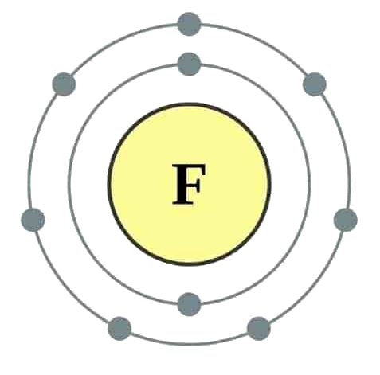

←
→
Fluorine is a chemical element with symbol F and atomic number 9. It is the lightest halogen and exists as a highly toxic pale yellow diatomic gas at standard conditions. As the most electronegative element, it is extremely reactive: almost all other elements, including some noble gases, form compounds with fluorine.
Among the elements, fluorine ranks 24th in universal abundance and 13th in terrestrial abundance. Fluorite, the primary mineral source of fluorine which gave the element its name, was first described in 1529; as it was added to metal ores to lower their melting points for smelting, the Latin verb fluo meaning "flow" gave the mineral its name. Proposed as an element in 1810, fluorine proved difficult and dangerous to separate from its compounds, and several early experimenters died or sustained injuries from their attempts. Only in 1886 did French chemist Henri Moissan isolate elemental fluorine using low-temperature electrolysis, a process still employed for modern production. Industrial production of fluorine gas for uranium enrichment, its largest application, began during the Manhattan Project in World War II.
Owing to the expense of refining pure fluorine, most commercial applications use fluorine compounds, with about half of mined fluorite used in steelmaking. The rest of the fluorite is converted into corrosive hydrogen fluoride en route to various organic fluorides, or into cryolite which plays a key role in aluminium refining. Organic fluorides have very high chemical and thermal stability; their major uses are as refrigerants, electrical insulation and cookware, the last as PTFE (Teflon). Pharmaceuticals such as atorvastatin and fluoxetine also contain fluorine, and the fluoride ion inhibits dental cavities, and so finds use in toothpaste and water fluoridation. Global fluorochemical sales amount to more than US$15 billion a year.
Fluorocarbon gases are generally greenhouse gases with global-warming potentials 100 to 20,000 times that of carbon dioxide. Organofluorine compounds persist in the environment due to the strength of the carbon–fluorine bond. Fluorine has no known metabolic role in mammals; a few plants synthesize organofluorine poisons that deter herbivores.